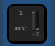
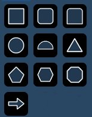

The following table contains the various magic sheet objects located in the first tab, and a brief description of what they do. Settings for objects can be adjusted in the MS Object Properties area.
Channel | acts as a direct select for a channel. | |
Group | acts as a direct select for a group. | |
Preset | acts as a direct select for a preset. | |
Palettes | acts as a direct select for a palette. | |
Macro | acts as a direct select for a macro. | |
Blank | can be assigned a target. | |
Tombstone | mirrors the channel indicators from the live/blind summary view. | |
Fader | assigns a virtual fader. If the virtual fader is assigned to an existing one, their settings will be the same. | |
Command Line | mirrors the command line. Can be assigned to mirror the command line for any user. Multiple command lines for different users can be used. | |
Text | places descriptive text on the sheet. The text can also be assigned a target. | |
Clock | adds a clock. | |
sACN Input | displays the sACN input values. | |
Foundation Motor |  | Adds a Foundation Motor item to sync with an actual Foundation. |
Line | draws a line. Examples of use could be as a pipe for fixtures or a divider between buttons. | |
Truss | places truss. | |
Shapes |  | draws shapes that can have a target assigned to them or could be used to represent set pieces. |
Points | allows for free form creation of objects. |